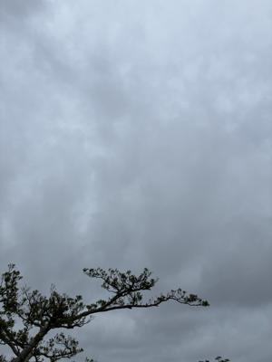
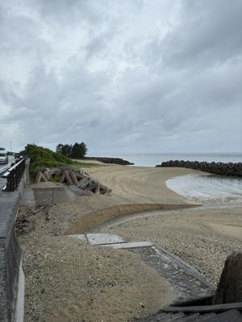
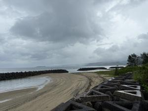
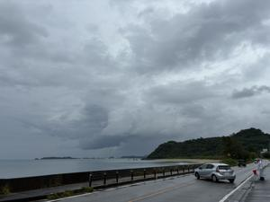

うるがいの話 ある日
最新: ６班【うるがいの話 ある日】とは 一日だけのプログです
『うるがいの話』の最新一日だけのプログで、通信料が少なく経済的だ。カニの画像をクリックすると全ての日付が載る『うるがいの話』サイトを表示します
|
|
【うるがいの話】 うるがい(ｳﾙｶﾞｲ urugai)とは、『もずくがに』の名前でとても大きくなります。 |
|---|---|
|
|
【カミマヤーの話】 猫のことを方言でマヤーといいます。カミマヤー（kamimayaa）とは、神の猫のことです。 |
|
【たながぁの音楽】 たながぁ（ﾀﾅｶﾞｰ tanagaa）とは手長えびのことで、何種類かあり大きいのは車 エビぐらいになります。 |

|
【ぶながぁの話】 ぶながぁ(ﾌﾞﾅｶﾞｰ bunagaa)とは、赤い髪の毛、赤い身体、そして身長は１ｍ２０ｃｍ ぐらい、川の蟹を食べているの目撃された。場所は沖縄県国頭郡大宜味村のと ある村僕の隣近所に住んでいる爺さんから、聞いた話です。 |
|
|
【ギーマの話】 ギーマ(giima)とは、山原の里山に咲くスズランに似た、 花を付けます。実は食べられます、 気が付くと口の周りが紫になっています。 |
2026年06月29日 (月）６班
15:06

きのうの朝、新聞をみると幼なじみのお母さんの告別式（９５歳
）が載っていました。甥っ子から、事前に連絡があるはずだが・
・・、甥っ子のヨメがここ数日、原因不明の高熱で入院してパタ
パタでいたとのこと。午前中、用事があったものの急遽、山原の
告別式へ行く。あらかじめ、雨雲レーダーを確認していたが、名
護に近づくにつれ、雨が降る。高速道路は、まれにみるガラガラ
状態。おそらく、台風の影響で観光客が少なくなっているかも。
甥っ子の家に寄るが、不在だった。砂浜をみると、木が伸びたり
と変貌していた。写真を撮ったあと土砂降りになった。


告別式では、喪主挨拶をした幼なじみのお兄さんを、高校の卒業
式以来（４９年ぶり）に見た。すっかりオジーになっていた。彼
は、高校時代に夜ギターを弾いていた。そして、私は彼のワンダ
ーフォーゲル部にも入部した。懐かしい、告別式では、年老いた
妹の同級生とも挨拶をする。告別式場への道路は、甥っ子を含め
年老いた青年達が、雨の中カッパをつけて車を誘導していた。

私の田舎では、とある家々を集め班で区切り、なにかと助け合っ
ていた。私たちの６班だった箇所は、ほとんど人がいない。大宜
味村そのものが、過疎の地域となった。
『沖縄地方の梅雨明けまだ？ 沖縄気象台、発表見送る』、ン？
天気予報では、この先ズート晴れだけど。